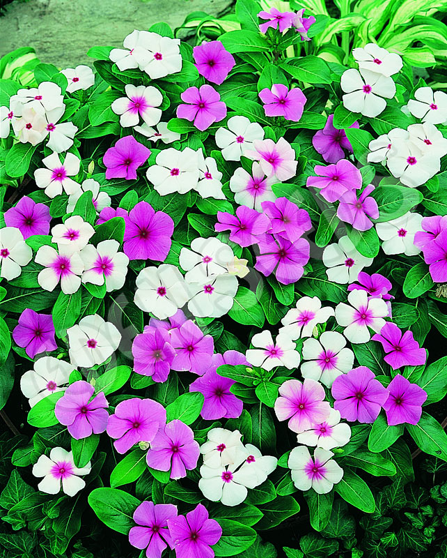

Overview
The plant is called Sadapushpa in Sanskrit, which means ‘ever blooming’.
Botanical Name
Vinca rosea, Catharanthus roseus G. Don
Family
Apocyanaceae family (Karavira Kula)
Vernacular Names
- Bengali: Nayantara
- Kannada: Sadapushpa, Masanada Hoo, Sanna Kanagile
- Marathi: Sadaphool
- Punjabi: Ratanjot
- Malayalam: Ushamalari
- English: Madagascar Periwinkle
Medicinal Properties
In the 1950s, the plant was studied for its medicinal properties, identifying four important compounds. Two crucial alkaloids, vincristine and vinblastine, are used for treating certain blood cancers. Other significant chemicals include ajmalicine, reserpine, serpentine, catharanthaine, lochnerin, lochnericine, vinorelbine, vindesine, and vincamine. The plant's extracts are being explored for treating various severe conditions like malignant lymphomas, neuroblastoma, Wilms tumor, leukemia, Hodgkin’s disease, and Kaposi’s sarcoma.
Home Remedies
- As Wound Healer: Mix leaves with turmeric to form a paste and apply to wounds 2-3 times a day.
- In Diabetes: Take 250-500 mg of root powder with honey. It is effective against Type II DM.
- In Hypertension: Extract juice from 5 fresh leaves and take 2-3 ml in the morning or night.
- For Irregular Menstruation: Boil 6-8 leaves in 2 cups of water until reduced to half. Consume regularly for three menstrual cycles.
- For Nasal and Oral Bleeding: Use flower juice with pomegranate tender buds for nasal bleeding, or mouth sores and ulcers.
- For Insect Bites: Apply fresh juice or paste of leaves to reduce irritation and swelling.
- For Acne and Scars: Apply a paste of vinca, neem, and turmeric over acne and skin scars.
Cautions
The plant is hot in potency and contains multiple chemical constituents. Use with caution, especially for pregnant or lactating women and those with ulcer or acid peptic disorders.
Therapeutic Actions
- External Use: Anti-microbial and anti-poisonous actions, indicated in animal poisoning.
- Nervous System: Calms the nervous system, induces sleep, and can be used for insomnia and anxiety disorders.
- Digestive System: Carminative and absorbent; indicated in dysentery.
- Circulatory System: Useful in hypertension.
- Excretory System: Indicated in diabetes (Madhumeha).
Rasa Panchak
- Guna: Laghu, Ruksha, Shita
- Rasa: Tikta
- Virya: Sheeta
- Vipaka: Katu